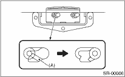
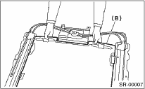

SUNROOF/T-TOP/CONVERTIBLE TOP (SUNROOF) > Sunroof Assembly
DISASSEMBLY
1. Remove the sunroof frame.
2. Cut the right front side sunshade claw (A).
3. Remove the right front slider.

4. Pull out the sunshade (B) from sunroof frame.
